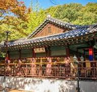
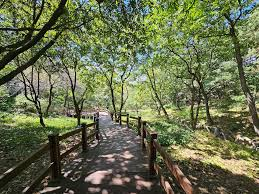

History of the Hometown
1. Goryeo and Joseon Dynasties
During the Goryeo Dynasty, Yongin developed as an agricultural center, and during the Joseon Dynasty, it was closely related to the royal family as a site of royal tombs.
2. Modernization and Urban Development
In modern times, urbanization rapidly progressed due to its proximity to Seoul, leading to a significant population increase since the 1990s due to metropolitan development.
3. Growth of Modern Yongin
Today, Yongin has grown into a transportation and economic hub, attracting attention with tourist attractions like Everland and the development of the IT industry.
Current Yongin Past & Future of YonginMain Attractions
| Name | Type of Attraction | Description |
|---|---|---|
| Everland | Theme Park | The most famous theme park in Korea, with various rides, a zoo, and gardens. |
| Korean Folk Village | Traditional Culture Experience | A place where you can experience Korean culture and lifestyle, featuring various traditional performances and exhibitions. |
| Yongin Natural Recreation Forest | Nature | A space for healing in nature, equipped with walking trails and picnic areas. |
 
Enjoy the T Express, a highlight of Everland!
Local Food 🍴
- Kimchi
- Bulogi 🥓
- Bibimbap
- Doenjang-jjigae 🍲
- Japchae 🍝
Fun Facts About My Hometown 😊
- Yongin has many royal tombs historically, deeply connected to the Joseon royal family. ✦
- Everland is known as the largest theme park in Korea, attracting millions of visitors every year.
There’s a funny saying that when someone mentions their hometown is Yongin, most people respond, "Ah, Everland?" ★ - Annual traditional festivals provide opportunities to experience local culture and traditions. ⚑